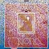

Celtic Lyrics Corner
>
Artists & Groups
>
Domhnaill Family
> Tríona

Tríona
(1975)
Tracks
:
1.
When I Was A Fair Maid
2.
Na Gamhna Geala
3.
The Wee Lass On The Brae
4. O'Carolan's Farewell To Music
5.
Shíl Mé Féin
6.
Turlough Óg (O'Boyle)
7. Foinn Bhriotáneacha
8.
As I Roved Out From The County Cavan
9.
Kitty From Ballinamore
10.
Stór A Stór A Ghrá
11.
Here's To All True Lovers